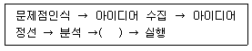
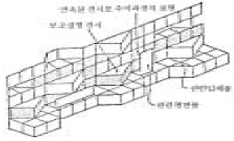
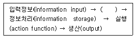
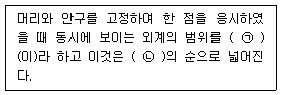

실내건축기사(구) (2005-05-29 기출문제)
1과목: 실내디자인론
1. 다음 설명 중 옳지 못한 것은?
- 패턴은 일반적으로 연속성을 지니며 이 중에서는 반복을 명확히 한 것과 어지럽게 흐트러진 형태의 것이 있다.
- 하나의 공간디자인에 대해서 일반적으로 한 가지 패턴보다는 여러 가지 패턴을 섞어서 다양한 변화를 주는것이 좋다.
- 실내 디자이너는 주어진 공간문제를 발전시키고 향상시킬 수 있는 방법을 계획하여야 한다.
- 입체의 표정은 그것이 포함하는 면의 표정에 의해 결정되나 그 밖에 음영, 색채, 재질에 따라 크게 표정이 달라진다.
(정답률: 70%)

2. 실내공간에서 공간의 성격과 분위기를 형성하는 요소와 가장 거리가 먼 것은?
- 설비
- 조명
- 색채
- 질감
(정답률: 92%)
3. 형태의 지각심리에 대한 설명 중 옳지 않은 것은?
- 사람들은 대상을 될 수 있는 한 간단한 구조로 인식하려 한다.
- 유사성은 형태, 크기, 위치 및 의미의 유사성으로 구분될 수 있다.
- 폐쇄되지 않은 형태는 폐쇄된 형태보다 시각적으로 더 안정감이 있다.
- 가까이 있는 것들은 시각적으로 통합되어 무리를 짓는다.
(정답률: 59%)
4. 실내디자인의 진행에 대한 다음 설명 중 옳은 것은?
- 실내디자인 프로젝트의 수행을 위해 의뢰인과 직접 접촉하여 요구사항을 파악하고 이를 객관화한다.
- 실내디자인의 프로세스 중 요구조건을 파악하고 실행 가능성의 판단은 기본설계단계에서 실시한다.
- 실내디자인 프로세스 중 파악해야 하는 내부적 조건에는 기존건축물의 용도, 법적규정이 있다.
- 실내디자인 프로세스 중 공간 Layout이란 동선계획에 해당하는 과정으로 사람과 물건의 이동패턴을 대상으로 한다.
(정답률: 34%)
5. 가전제품 판매장에 있어 전시(display)의 목적으로 적당하지 않은 것은?
- 판매율을 높인다.
- 기업과 상품의 이미지를 높인다.
- 타점과의 차별화를 꾀한다.
- 제품의 기능을 높인다.
(정답률: 85%)
6. 다음 의자의 이름중 마르셀 브로이어(Marcel Breuer)가 디자인한 가구는?
- 바르셀로나 의자(Barcelona chair)
- 체스카 의자(Cesca chair)
- 투겐하트 의자(Tugendhat chair)
- 흔들 의자(rocking chair)
(정답률: 73%)
7. 디자인 원리에 대한 다음 설명 중 옳지 않은 것은?
- 동일성이 적은 조화는 구성이 어렵고 질서를 잃기 쉬우나 생동적이고 활발할 수 있다.
- 균형은 인간의 주의력에 의해 감지되는 것으로 실내 공간의 편안함과 침착함을 연출한다.
- 리듬은 실내공간 디자인에서 시각적 질서, 율동감 및 생동감을 연출하는데 사용된다.
- 비정형 균형에는 좌우대칭과 방사대칭이 있으며 단순하고 엄숙하며 정적이다.
(정답률: 72%)
8. 쇼윈도우나 쇼케이스에 있어서의 현휘(눈부심) 현상은 어느 경우에 일어나는가?
- 외부조도가 내부조도보다 높을 때
- 외부조도가 내부조도가 같을 때
- 내부조도가 외부조도보다 높을 때
- 가로수를 심어 맞은 편 건물의 영상이나 반사광이 생기지 않을 때
(정답률: 50%)
9. 1959년경 독일의 자문회사에 의해 소개되었으며, 오피스 작업을 사람의 흐름과 정보의 흐름을 매체로 효율적인 네트워크가 되도록 배치하는 방법은?
- 조닝
- 버블다이어그램
- 매트릭스
- 랜드스케이프 플래닝
(정답률: 84%)
10. 19세기말부터 20세기초에 걸쳐 벨기에와 프랑스를 중심으로 모리스와 미술·공예운동의 영향을 받아서 과거의 양식과 결별하고 식물이 갖는 단순한 곡선형태를 인테리어 가구 구성에 이용한 예술운동은?
- 아방가르드
- 아르누보
- 아르데코
- 컨템프로리
(정답률: 89%)
11. 실내디자인의 영역에 대한 다음 설명 중 옳은 것은?
- 실내디자인의 영역은 건축물의 실내공간을 주 대상으로 하며, 도시환경이나 가로공간에서도 발견된다.
- 실내디자인은 건축공간의 심리적 문제해결이나 독자적인 표현을 대상으로 하며 건축물의 매스나 형태의 디자인을 주 영역으로 한다.
- 실내디자인은 인간생활에 적합한 환경을 구성함에 있어 건축공간의 기능적 측면은 건축의 영역에 해당되므로 이를 고려할 필요는 없다.
- 실내디자인은 인간의 물리적 조건, 환경적 조건, 기능적 조건을 충족함을 목표로 하며, 정서적 조건은 전적으로 의뢰인의 몫이다.
(정답률: 60%)
12. 다음 중 은행의 영업카운터의 전체 높이로 가장 알맞은 것은?
- 60 ∼ 75 cm
- 70 ∼ 85 cm
- 100 ∼ 1⑤ cm
- 120 ∼ 135 cm
(정답률: 50%)
13. 조닝(zoning)계획에서 우선적으로 고려하지 않아도 되는 사항은?
- 사용빈도
- 사용시간
- 사용행위
- 사용재료
(정답률: 79%)
14. 상반된 성격의 결합으로 극적인 분위기를 주는 요소는?
- 균형
- 대비
- 리듬
- 비례
(정답률: 90%)
15. 실내공간 구성요소에 대한 설명 중 옳지 않은 것은?
- 일정한 간격으로 배열된 기둥은 실내에서 수직적 요소로 볼 수 있다.
- 벽의 걸레받이는 천정을 따라 돌려진 몰딩과 함께 실내에서 수평적요소로 작용한다.
- 노출된 계단은 사선의 역동성을 갖는다.
- 아치형의 개구부는 수평선과 수직선의 조합으로 시각적으로 평온하다.
(정답률: 50%)
16. 아래표는 실내디자인의 프로세스를 나열한 것이다. ( )안에 들어갈 가장 알맞은 내용은?

- 견적
- 설계
- 결정
- 시공
(정답률: 53%)
17. 주거공간의 영역을 옳게 나열한 것은?
- 사회적 영역 : 거실, 가족실, 현관, 식사실
- 개인적 영역 : 침실, 서재, 욕실, 응접실
- 서비스 보조 영역 : 창고, 건조공간, 취미실
- 작업 영역 : 주방, 세탁실, 주차장, 발코니
(정답률: 50%)
18. 실내디자인을 구성하는 제요소 중 천장의 유형에 관한 그림이다. 잘못 짝지어진 그림은?
- 단저형

- 반원형

- 물매형

- 호형

(정답률: 62%)
19. 연속적인 주제를 시간적인 연속성을 가지고 다음 그림과 같이 선형으로 연출하는 전시방법은?

- 디오라마전시
- 파노라마전시
- 아일랜드전시
- 하모니카전시
(정답률: 81%)
20. 실내공간에서 질감이 미치는 영향으로 옳지 않은 것은?
- 재료가 지닌 질감은 실제의 생활에 편리함과 불편함을 준다.
- 매끄러운 질감은 빛을 반사하며 시선을 분산시킨다.
- 질감이 거칠면 거칠수록 빛을 흡수하여 무겁고 안정된 시각적 느낌을 준다.
- 반짝이는 질감의 재료는 청소하기는 쉽지만 더러움이 너무 쉽게 눈에 띄어 불편하다.
(정답률: 34%)
2과목: 색채학
21. 오스트발트 표색계의 설명으로 틀린 것은?
- 영·헬름홀쯔의 설에 근거를 두고 있다.
- 색입체는 복원추체이다.
- 모든 색은 순색량 + 흰색량 + 검정색량 = 100 % 가 된다.
- 안료로서 발색이 가능한 명도는 a, c, e, g, i, l, n, p 의 8단계이다.
(정답률: 65%)
22. 다음 중 가시광선에 속하는 파장의 범위는?
- 300nm - 700nm
- 380nm - 780nm
- 400nm - 800nm
- 420nm - 820nm
(정답률: 79%)
23. 우리 눈의 망막상에서 어두운 곳에서는 약한 광선을 받아 들이며 색상은 보이지 않고 명암만을 판별하는 시세포는?
- 추상체
- 한상체
- 수정체
- 홍채
(정답률: 60%)
24. 유행색을 선정하는 국제단체인 인터칼라(Intercolor)에서 는 대개 얼마 후의 칼라를 예측하는가?
- 2년
- 1년 6개월
- 1년
- 6개월
(정답률: 32%)
25. 명시도(明視度)는 색고유의 특성보다 배경색과의 관계에 의하여 결정된다. 흑색 배경이라고 가정할 때 다음 중 명시도가 가장 높은 색은?
- 황색(yellow)
- 백색(white)
- 자색(purple)
- 청색(blue)
(정답률: 42%)
26. 색의 대비현상에 관한 내용 중에서 잘못된 것은?
- 명도대비 : 명도가 다른 두 색이 서로의 영향으로 명도차가 더 크게 나타나는 것
- 연변대비 : 두 색의 경계부분에서 색의 3속성별로 대비 현상이 더욱 강하게 나타나는 것
- 계시대비 : 먼저 본 색의 영향으로 다음에 보는 색이 먼저 본 색의 보색으로 보이는 것
- 보색대비 : 보색관계인 두 색이 서로의 영향으로 각각의 채도가 더 높게 보이는 것
(정답률: 42%)
27. 좋은 느낌의 색을 선택하는데 있어 기본적인 상황을 설명한 것 중 틀린 것은?
- 제품에 적합한 것
- 용도에 적합한 것
- 개성이 있는 것
- 계획자 기호에 맞는 것
(정답률: 28%)
28. 다음 중 색의 대비현상과 관계 없는 것은?
- 색상대비
- 방향대비
- 명도대비
- 보색대비
(정답률: 82%)
29. 오스트발트의 색채 조화론과 관계 있는 것은?
- 동등조화, 유사조화
- 등백 혹은 등흑계열과 회색조화
- 대비조화, 유사조화
- 제1부조화, 제2부조화
(정답률: 62%)
30. 배색된 색채들이 서로 공통되는 상태와 속성을 가질 때, 그 조화 원리론은?
- 질서의 원리
- 비모호성의 원리
- 유사의 원리
- 대비의 원리
(정답률: 88%)
31. 다음 중 속도감이 가장 둔한 느낌의 색상은?
- 노랑
- 빨강
- 주황
- 청록
(정답률: 75%)
32. 먼셀(Munsell)의 색상환에서 주요 5색상에 해당되지 않는 조건은?
- Blue
- Purple
- Orange
- Green
(정답률: 59%)
33. 오스트발트 색채 시스템에 관한 설명으로 틀린 것은?
- 노랑을 기준으로 전체 24색상으로 이루어져 있다.
- 톤은 무채색을 제외하고 각 색상 당 28색으로 이루어져 있다.
- 원래 색채의 배색을 위한 조화를 목적으로 제작되었다.
- 색채조화메뉴얼(CHM)에는 모두 40색상으로 구성된다.
(정답률: 35%)
34. 다음 중간혼합에 관한 설명 중 잘못된 것은?
- 색을 혼합하면 백색이 된다.
- 날줄과 씨줄에 의한 직물에 활용된다.
- 실제의 물리적 혼합이 아니라 눈의 망막에서 일어나는 착시적 혼합이다.
- 망점에 의한 원색 인쇄에도 활용된다.
(정답률: 46%)
35. 다음 중 색채의 감정적 효과로서 가장 흥분을 유발시키는 색은?
- 난색계의 높은 채도
- 한색계의 높은 채도
- 난색계의 높은 명도
- 한색계의 높은 명도
(정답률: 75%)
36. 실내의 색채조절에 있어서 옳지 못한 설명은?
- 천정색의 경우 반사율이 높으면서 눈이 부시지 않는 무광택 재료로 시공해야 한다.
- 벽의 아랫부분의 굽도리는 벽의 윗부분보다 더 밝게 해주어야 한다.
- 바닥의 경우 반사율이 낮은 색이 좋으며, 너무 어둡거나 너무 밝은 것은 좋지 않다.
- 문의 양쪽 기둥이나 창문틀은 벽의 색과 맞도록 고려하여야 한다.
(정답률: 알수없음)
37. 오스트발트의 색채 조화론에 관한 다음 설명 중 틀린 것은?
- 무채색 단계에서 같은 간격으로 선택한 배색은 조화된다.
- 등색상 3각형의 아래쪽 사변에 평행한 선상의 색들은 조화된다.
- 등색상 3각형의 위쪽 사변에 평행한 선상의 색들은 조화된다.
- 색상 일련번호의 차가 6 ∼ 8일 때 반대색 조화가 생긴다.
(정답률: 60%)
38. 두가지 색이 회전에 의해 혼합되는 경우는?
- 가산혼합
- 감산혼합
- 중간혼합
- 색광혼합
(정답률: 64%)
39. 비렌(Birren)의 형과 색의 연관 관계 중 틀린 것은?
- 빨강색 - 정사각형
- 노랑색 - 삼각형
- 파랑색 - 육각형
- 주황색 - 직사각형
(정답률: 92%)
40. 다음 중 점묘법으로 그린 그림의 혼색효과와 같은 것은?
- 병치감법혼색
- 동시감법혼색
- 계시가법혼색
- 병치가법혼색
(정답률: 32%)
3과목: 인간공학
41. 다음 중 망막위치에서 전시위치의 최대범위는?
- 좌,우 45도
- 좌,우 15도
- 상+40도, 하-20도
- 상+30도, 하-20도
(정답률: 60%)
42. 사람눈의 시각(視覺)능력의 측정과는 큰 관계가 없는 시력의 척도는?
- 최소가분시력(minimum seperable acuity)
- 입체시력(stereoscopic acuity)
- 버니어(vernier)시력
- 동시력(dynamic visual acuity)
(정답률: 25%)
43. 소리의 강도를 나타내는 표기법은?
- sone
- phone
- mel
- decibel
(정답률: 67%)
44. 다음 시각적 표시장치의 지침 설계의 원칙 중 틀린 것은?
- 뾰족한 지침을 사용하라.
- 지침을 눈금면과 밀착시켜라.
- 지침의 색은 선단에서 눈금의 중심까지 칠하라.
- 지침의 끝은 작은 눈금과 겹치도록 하라.
(정답률: 86%)
45. 다음 색채조절(color conditioning)의 결과에 대한 설명 중 잘못된 것은?
- 생산의 증진
- 피로의 경감
- 마음의 윤택성이 증가
- 원색 사용으로 청량감이 증진
(정답률: 31%)
46. 피부감각의 특성에 관한 설명 중 틀린 것은?
- 촉각을 가지고 있다.
- 통각, 압각, 온각, 냉각을 가지고 있다.
- 같은 크기의 자극이 반복되면 적응되어 고유감각을 잃는다.
- 뇌는 통각을 가지고 있다.
(정답률: 73%)
47. 다음 중 양립성(compatibility)을 설명하는 내용으로 적절치 못한 것은?
- 청색은 정상을 나타내는 것과 같은 연상의 양립성은 개념적 양립성이다.
- 공간적 양립성은 표시장치의 이동방향이 조종장치의 이동방향과 일치할 때를 가리킨다.
- 표시장치의 이동방향과 조종장치의 이동방향이 다르면 인간실수가 증가된다.
- 양립성이 클수록 자극에 대한 반응속도는 빨라진다.
(정답률: 67%)
48. 대량생산을 전제로 한 가벼운 작업용 의자와 책상을 디자인 할 경우(예:사무용, 강의용 등) 고려해야 할 점에 대한설명 중 잘못된 것은?
- 의자 좌면(座面)의 높이는 하퇴(下腿)의 길이가 높은 사람보다는 짧은 사람에게 맞추어야 한다.
- 등받침의 높이는 앉은 자세에서 좌면에서 견갑골 하단까지의 거리가 적당하다.
- 의자와 책상의 디자인에 있어서 의자와 책상은 각각 독립된 칫수대로만 제작하면 된다.
- 제도용 의자는 앉아서도 서서도 사용할 수 있게 고려한 디자인을 하여야 된다.
(정답률: 69%)
49. 다음 중 조도(illumination)의 단위는?
- 칸델라(candela)
- 룩스(lux)
- 왓트(watt)
- 루멘(lumen)
(정답률: 58%)
50. 다음 중 인간관계가 작업 및 작업공간의 설계에 못지 않게 생산성에 큰 영향을 미친다는 것은?
- 호오손(Hawthorne)법칙
- 페크너(Fechner)법칙
- 웨버(Weber)법칙
- 밀러(Miller)법칙
(정답률: 50%)
51. 다음 중 시각피로 원인 중에서 조절성 안정피로를 의미하는 것은?
- 노인과 원시, 난시, 초점조절력의 쇠퇴 또는 마비
- 신경쇠약이나 히스테리의 경우
- 망막에 맺히는 상이 두 눈에 차이가 날 경우
- 시선을 대상물에 집중시키는 기능의 이상이나 난시 또는 사시가 있는 경우
(정답률: 50%)
52. 음향 에너지의 표기법이 맞는 것은?
- dyne/cm2
- watt/cm2
- cycle/sec
- bel
(정답률: 54%)
53. 다음 내용은 인간이 시스템에서 정보를 처리하는 과정을 나타낸 것이다. 괄호 안에 적절한 기능은?

- 검출(sensing)
- 시스템 환경(system environment)
- 대응선택(response selection)
- 피드백(feedback)
(정답률: 알수없음)
54. 단기 감각 저장고(short term memory)의 역할에 대한 설명 중 틀린 것은?
- 자극의 물리적인 세부사항을 기억한다.
- 저장된 기억은 빠르게 소멸된다.
- 훈련에 의해 능력이 향상될 수 있다.
- 문제 해결을 위한 지식 저장 창고이다.
(정답률: 60%)
55. 다음은 백분위(퍼센타일)에 관한 사항이다. 올바르게 관련 지어진 것이 아닌 것은?
- 문높이 - 95퍼센타일
- 운동경기장 맨 앞자리 스텐드 난간높이 - 5퍼센타일
- 시내버스의 천정높이 - 95퍼센타일
- 좌식방에서의 창턱높이 - 95퍼센타일
(정답률: 48%)
56. 인체 골격이 하는 주요 기능이 아닌 것은?
- 몸을 지탱하며 그 외형을 지지한다.
- 체강(體腔)을 형성하며 체강내의 장기를 보호한다.
- 골격 내부에 골수를 넣어 조혈작용을 한다.
- 대뇌의 지시에 따라 자기 마음대로 이완, 수축을 해골격운동에 기여한다.
(정답률: 71%)
57. 다음 보기의 ㉠과 ㉡의 빈칸안에 들어갈 내용으로 알맞게 짝지어진 것은?

- ㉠시력-㉡백색, 청색, 황색, 적색, 녹색
- ㉠시야-㉡백색, 청색, 황색, 적색, 녹색
- ㉠시력-㉡녹색, 적색, 황색, 청색, 백색
- ㉠시야-㉡녹색, 적색, 황색, 청색, 백색
(정답률: 54%)
58. 다음 인체의 긴장을 나타내는 신체적 척도(지표)가 아닌 것은?
- 심박수
- 심전도
- 혈압
- 호흡수
(정답률: 63%)
59. 정보의 유형에서 사물, 지역, 구성 등을 사진, 그림, 그래프로 나타내는 정보는?
- 상태(status)정보
- 묘사적(representational)정보
- 신호(signal)정보
- 식별(identification)정보
(정답률: 57%)
60. 내이(內耳)에 관한 설명으로 옳은 것은?
- 소리를 모아주는 역할을 한다.
- 소리를 청신경 중추에 보내는 역할을 한다.
- 공기중의 음파가 직접 내이에 전하여져서 소리의 감각을 느끼게 한다.
- 목과 코로 연결되어 있다.
(정답률: 78%)
4과목: 건축재료
61. 표건상태의 잔골재 500g을 건조시켜 기건상태에서 측정한 결과 460g, 절건상태에서 측정한 결과 450g이었다. 이 잔골재의 흡수율은?
- 8%
- 8.8%
- 10%
- 11.1%
(정답률: 32%)
62. 시멘트의 발열량을 저감시킬 목적으로 제조한 시멘트로 매스콘크리트용으로 사용되며, 수축이 작고 화학저항성이 일반적으로 크며 내황산염성이 있는 것은?
- 조강 포틀랜드 시멘트
- 중용열 포틀랜드 시멘트
- 실리카 시멘트
- 알루미나 시멘트
(정답률: 84%)
63. 다음 접착제에 관한 기술 중 틀린 것은?
- 페놀수지 접착제는 용제형과 에멀젼형이 있고 멜라민, 초산비닐 등과 공중합시킨 것도 있다.
- 요소수지 접착제는 내열성이 200℃이고 내수성이 대단히 크며 전기절연성도 우수하다.
- 멜라민수지 접착제는 열경화성수지 접착제로 내수성이 우수하여 내수합판용에 사용된다.
- 에폭시 접착제는 기본 점성이 크며 내수성, 내약품성, 전기절연성이 모두 우수한 만능형 접착제이다.
(정답률: 45%)
64. 다음의 집성목재에 관한 설명 중 옳지 않은 것은?
- 요구된 치수, 형태의 재료를 비교적 용이하게 제조할 수 있다.
- 충분히 건조된 건조재를 사용하므로 비틀림, 변형 등이 생기지 않는다.
- 목재의 강도를 인공적으로 자유롭게 조절할 수 있다.
- 하드 텍스라고도 불리우며 목재의 결점이 분산되어 높은 강도를 얻을 수 있다.
(정답률: 31%)
65. 목재에 관한 설명 중 옳지 않은 것은?
- 공극율은 단위용적의 목재 중에 함유된 공극비율로서 목재의 약제주입이나 압축을 수반하는 가공처리에 있어서 중요하다.
- 목재의 진비중은 수종에 무관하게 일정한 값을 가지는데 일반적으로 1.54가 통용되고 있다.
- 기건상태는 세포막 내부가 완전히 수분으로 포화되어 있고 세포내공과 공극 등에는 액체수분이 존재하지 않는 상태를 말한다.
- 섬유포화점 이하에서는 함수율이 감소할수록 강도는 증대하며 인성은 감소한다.
(정답률: 54%)
66. 목재에 사용되는 크레오소트 오일에 대한 설명 중 옳지 않은 것은?
- 냄새가 좋아서 실내에서도 사용이 가능하다.
- 방부력이 우수하고 가격이 저렴하다.
- 도장은 불가능하며 독성이 적다.
- 침투성이 좋아 목재에 깊게 주입된다.
(정답률: 78%)
67. 다음 중 목구조의 접합철물로 적합하지 않은 것은?
- 꺽쇠
- 듀벨
- 보통볼트
- 드라이브 핀
(정답률: 50%)
68. 소석회에 모래, 해초풀, 여물 등을 혼합하여 바르는 미장재료로서 목조바탕, 콘크리트 블록 및 벽돌 바탕 등에 사용되는 것은?
- 회반죽
- 돌로마이트 플라스터
- 혼합석고 플라스터
- 킨즈 시멘트
(정답률: 75%)
69. 다음의 타일 중 흡수율이 가장 적은 것은?
- 석기질타일
- 자기질타일
- 토기질타일
- 도기질타일
(정답률: 80%)
70. 금속부식을 방지하기 위한 방법 중 옳은 것은?
- 큰 변형을 받은 금속은 불림하여 사용한다.
- 이종금속의 인접 또는 접촉 사용을 금한다.
- 표면은 가급적 포습된 상태로 사용한다.
- 부분적인 녹은 제거하지 않고 사용해도 좋다.
(정답률: 54%)
71. 석고 플라스터에 대한 설명으로 틀린 것은?
- 경화속도가 느리다.
- 내화성을 갖는다.
- 경화, 건조시 치수 안정성을 갖는다.
- 물에 용해되는 성질이 있어 물을 사용하는 장소에는 부적합하다.
(정답률: 23%)
72. 다음의 합성수지판류에 대한 설명 중 옳은 것은?
- 폴리에스테르판은 가성소다나 알칼리에 약하다.
- 아크릴 평판은 투명도는 좋지만 착색을 할 수 없으며 가공이 어렵다.
- 페놀수지판은 화재시 Cl2 가스 발생이 크다.
- 염화비닐판은 다갈색의 색조와 석탄산의 취기가 결점이다.
(정답률: 24%)
73. 점토의 성질에 대한 설명으로 틀린 것은?
- 강도는 점토의 종류에 관계없이 일정하며, 인장강도는 압축강도의 약 5배 정도이다.
- 색상은 철산화물 또는 석회물질에 의해 나타난다.
- 수축은 건조 및 소성시 일어나며 건조수축은 점토의 조직에 관계하는 이외에 가하는 수량도 영향을 준다.
- 가소성은 점토입자가 미세할수록 좋고 또한 미세부분은 콜로이드로서의 특성을 가지고 있다.
(정답률: 75%)
74. 평판 성형되어 글라스와 같이 이용되는 경우가 많은 열가소성 수지는?
- 페놀수지
- 멜라민수지
- 폴리우레탄수지
- 아크릴수지
(정답률: 59%)
75. 단열유리라고도 하며 철, Ni, Cr 등이 들어 있는 유리로서 담청색을 띠고 태양광선 중의 장파부분을 흡수하는 것은?
- 마판유리
- 자외선투과유리
- 열선흡수유리
- 열선반사유리
(정답률: 50%)
76. 응결이 대단히 느리므로 명반을 촉진제로 배합한 것으로 약간 붉은 빛을 띤 백색을 나타내는 플라스터는?
- 혼합석고 플라스터
- 보드용 석고 플라스터
- 순석고 플라스터
- 경석고 플라스터
(정답률: 54%)
77. 석재의 성질에 관한 기술로서 틀린 것은?
- 화강암은 다른 석재에 비해 강도, 풍화, 동해, 내화성이 가장 우수하다.
- 대리석은 강도가 크지만 산에 약하기 때문에 실외용으로 적합하지 않다.
- 안산암은 조직에 따라 색과 석질의 조밀도가 각각 다르다.
- 석재는 압축강도에 비해 휨강도가 매우 낮다.
(정답률: 50%)
78. 다음의 각종 도료에 대한 설명 중 옳지 않은 것은?
- 유성페인트의 도막은 견고하나 바탕의 재질을 살릴 수 없다.
- 유성에나멜페인트는 도막이 견고할 뿐만 아니라 광택도 좋다.
- 광명단은 철재의 방청제는 물론 목재의 방부제로도 사용된다.
- 알루미늄페인트는 금속 알루미늄분말과 유성바니시로 구성된다.
(정답률: 56%)
79. 시멘트의 분말도에 관한 설명 중 옳지 않은 것은?
- 시멘트의 분말이 미세할수록 수화반응이 느리게 진행하여 강도의 발현이 느리다.
- 분말이 과도하게 미세하면 풍화되기 쉽고 또한 사용후 균열이 발생하기 쉽다.
- 시멘트의 분말도 시험으로는 체분석법, 피크노메타법, 브레인법 등이 있다.
- 분말도는 시멘트의 성능 중 수화반응, 블리딩, 초기강도 등에 크게 영향을 준다.
(정답률: 40%)
80. 비철금속 중 알루미늄에 대한 설명으로 옳지 않은 것은?
- 순도가 높은 알루미늄은 내식성이 크고 전연성이 크다.
- 연질이고 강도가 낮다.
- 산, 알칼리 및 해수에 대해서는 내식성이 크다.
- 콘크리트에 접하거나 흙 중에 매몰된 경우에는 부식되기 쉽다.
(정답률: 50%)
5과목: 건축일반
81. 포스트 모더니즘 계열의 건축가와 가장 관계가 먼 사람은?
- 빅토르 오르타
- 필립 존슨
- 마이클 그레이브스
- 로버트 벤츄리
(정답률: 50%)
82. 널 옆이 서로 물려지게 하고 그 한 옆에서 못질하여 못머리가 감추어지며 마루의 진동에도 못이 솟아오르는 일이 없는 마루깔기법은?
- 맞댄쪽매
- 반턱쪽매
- 제혀쪽매
- 빗쪽매
(정답률: 78%)
83. 목구조에 사용하는 이음, 맞춤의 보강철물로서 큰 보에 걸쳐 작은 보를 받게 하는데 사용되는 것은?
- 띠쇠
- 감잡이쇠
- 안장쇠
- 듀벨
(정답률: 40%)
84. 글래스고우 미술학교를 디자인 하였으며 스코틀랜드 글래스고우를 중심으로 활동한 아르 누보(Art Nouveau)의 대표적 건축가는?
- 빅터 오르타(Victor Horta)
- 매킨토시(Charles Rennie Mackintosh)
- 기마르(Hector Giumard)
- 가우디(Antonio Gaudi)
(정답률: 27%)
85. 건축물의 내부 마감재료를 방화상 지장이 없는 재료로하여야 하는 대상건축물이 아닌 것은?
- 판매 및 영업시설의 용도에 쓰이는 건축물로서 당해 용도에 쓰이는 거실의 바닥면적의 합계가 200m2인 건축물
- 위험물저장 및 처리시설
- 업무시설중 오피스텔의 용도에 쓰이는 건축물로서 2층의 당해 용도에 쓰이는 거실바닥면적의 합계가 300m2인 건축물
- 6층의 거실 바닥면적의 합계가 500m2 인 건축물
(정답률: 34%)
86. 소방시설의 관계가 서로 잘못 짝지어진 것은?
- 소화설비 - 스프링클러설비
- 경보설비 - 자동화재탐지설비
- 피난설비 - 유도등 및 유도표지
- 소화활동설비 - 옥내소화전설비
(정답률: 53%)
87. 관람석 또는 집회실의 바닥면적이 200m2 이상인 경우 반자의 높이를 4미터 이상으로 하여야 하는 대상 건축물이 아닌 것은?
- 문화 및 집회시설(전시장, 동·식물원 제외)
- 의료시설중 장례식장
- 판매 및 영업시설 중 상점
- 위락시설중 주점영업
(정답률: 25%)
88. 나무구조의 2층 마루틀에서 큰보 위에 작은보를 걸고 그 위에 장선을 대고 마루널을 깐 것은?
- 보마루틀
- 짠마루틀
- 홑마루틀
- 장선마루틀
(정답률: 23%)
89. 철골조 용접의 결함에 대한 설명 중 옳은 것은?
- 언더컷(under cut) : 용접봉의 통과로 발생한 용착금속층
- 오버랩(overlap) : 용착금속이 모재와 융합되지 않고 덮여진 부분
- 블로우 홀(blow hole) : 용접부분 표면에 생기는 작은 구멍
- 위이핑 홀(weeping hole) : 금속이 녹아들 때 생기는 기포나 작은 틈
(정답률: 44%)
90. 경계벽 및 간막이벽의 설치를 차음구조의 대상으로 하여야하는 대상건축물이 아닌 것은?
- 아파트의 각 세대간 경계벽
- 기숙사의 침실간의 간막이벽
- 숙박시설의 객실간의 간막이벽
- 학원의 교실간의 간막이벽
(정답률: 45%)
91. 벽면에 육중하고 대담한 효과를 주기 위해 석재의 표면을 거친 수법으로 처리하는 방식은?
- 모울딩 (Molding)
- 러스티케이션 (Rustication)
- 모자이크 (Mosaic)
- 테라코타 (Terra cotta)
(정답률: 67%)
92. 서양건축양식의 역사적인 순서가 가장 올바른 것은?
- 그리이스 - 로마 - 비잔틴 - 로마네스크 - 르네상스 - 고딕 - 바로크
- 그리이스 - 로마 - 비잔틴 - 르네상스 - 로마네스크 - 고딕 - 바로크
- 그리이스 - 로마 - 비잔틴 - 로마네스크 - 고딕 - 르네상스 - 바로크
- 그리이스 - 로마 - 비잔틴 - 고딕 - 로마네스크 - 르네상스 - 바로크
(정답률: 48%)
93. 비잔틴 건축과 가장 관계가 먼 것은?
- 펜덴티브 돔(pendentive dome)
- 부주두(dosseret)
- 플라잉 버트레스(flying buttress)
- 모자이크(mosaic)
(정답률: 20%)
94. 건축물의 건축허가 등을 함에 있어서 미리 그 건축물의 공사 시공지 또는 소재지를 관할하는 소방본부장 또는 소방서장의 동의를 받아야 하는 대상물의 범위에 해당하지 않는 것은?
- 연면적이 300m2 이상인 모든 건축물
- 차고·주차장으로 사용되는 시설로서 차고·주차장으로 사용하는 층 중 바닥면적이 200m2 이상인 층이 있는 시설
- 지하층 또는 무창층이 있는 건축물로서 바닥면적이 150m2 이상인 층이 있는 것
- 항공기격납고, 관망탑, 항공관제탑
(정답률: 72%)
95. 건축물의 내부에 설치하는 피난계단의 구조에 대한 설명으로 옳은 것은?
- 계단실의 실내에 접하는 부분의 마감은 준불연재료로 할 것
- 계단실에는 예비전원에 의한 조명설비를 할 것
- 건축물의 내부에서 계단실로 통하는 출입구의 유효너비는 0.7m 이상으로 할 것
- 건축물의 내부와 접하는 계단실의 창문은 미서기창으로서 그 면적을 각각 3m2 이하로 할 것
(정답률: 65%)
96. 벽돌구조의 벽체에 대한 설명 중 옳지 않은 것은?
- 문꼴 위와 그 바로 위의 문꼴과의 수직거리는 30cm이상으로 한다.
- 기초의 부동침하는 벽돌 벽면에 균열이 생기는 이유가 될 수 있다.
- 이중벽일 때 어느 한쪽은 내력벽의 규정에 합당해야한다.
- 나비가 180cm가 넘는 문꼴의 상부에는 철근콘크리트 인방보를 설치한다.
(정답률: 47%)
97. 철근콘크리트조에 사용하는 철근에 관한 설명으로 옳은 것은?
- 철근의 피복두께는 철근콘크리트구조물을 내구ㆍ내화적으로 유지하기 위해 필요하다.
- 기둥철근은 수직철근을 주근으로 하며 스터럽으로 보강하여 좌굴과 전단력에 저항한다.
- 굵은 철근은 가공은 어렵지만 가는 철근을 여러 개사용하는 것보다 부착응력상 유리하다.
- 중요한 정착부분 또는 기둥, 보 등의 주근은 갈고리근을 사용할 수 없다.
(정답률: 43%)
98. 성 베드로 성당(St. Peter)에 대한 다음 설명 중 옳지 않은 것은?
- 광장과 성 베드로 성당을 연결하는 열주랑은 카피톨린 언덕에서와 비슷한 사다리꼴 형태를 이룬다.
- 성당의 뒷부분과 돔은 마데르나의 작품으로 간주된다.
- 성 베드로의 무덤을 나타내기 위한 거대한 스케일의 순교자 교회로 의도되있다.
- 성당에 대한 미켈란젤로의 설계는 브라만테의 가볍고 기하학적 건축 대신에 조각적인 작품의 경향을 나타낸다.
(정답률: 12%)
99. 반자에 대한 설명 중 옳지 않은 것은?
- 천장을 가리어 댄 구조체를 반자라고 한다.
- 제물반자는 바닥판 밑을 제물로 또는 바르는 반자이다.
- 단독주택 거실의 반자높이는 1.8m 이상으로 하여야한다.
- 층단반자는 천장 주위 또는 구석 일부의 반자를 일단 낮게 하여 일반반자와 대조가 되게 한 것이다.
(정답률: 41%)
100. 승용승강기를 설치해야 하는 각 층의 거실면적이 1,000m2인 15층 아파트의 승용승강기의 댓수는? (단, 승강기는 11인승)
- 2 대
- 3 대
- 4 대
- 5 대
(정답률: 38%)
6과목: 건축환경
101. 공기조화 방식 중 부분적인 부하의 변동이 있는 공간에서는 사용하지 않는 방식은?
- 단일덕트 정풍량방식
- 이중덕트 방식
- 유인유니트 방식
- 팬코일유니트 방식
(정답률: 40%)
102. 벽체의 표면결로 방지대책으로 부적당한 것은?
- 실내의 환기량을 늘인다.
- 벽체의 실내측 표면온도를 높인다.
- 벽체의 실내측 표면을 열전도성이 좋은 재료로 방습층을 시공한다.
- 구조재의 단열이 취약한 부분을 없도록 한다.
(정답률: 48%)
103. 벽체의 단열에 관한 기술 중 옳지 않은 것은?
- 외벽 모서리부분의 열관류율은 다른 부분의 열관류율보다 큰 것이 보통이다.
- 밀폐된 공기층이 있는 경우 벽체의 단열효과는 공기층의 두께에 비례하여 커진다.
- 벽체표면의 열전달율은 조건에 따라 달라진다.
- 동일 벽체라 하더라도 계절에 따라 열관류율은 달라진다.
(정답률: 29%)
104. 단일벽체의 투과손실에 대한 설명이다. 틀린 것은?
- 벽체의 질량이 증가할수록 투과손실은 커진다.
- 주파수가 커질수록 투과손실은 커진다.
- 일반적으로 저주파수에서 공진영역이 발생한다.
- 투과손실은 일치효과에 의해 증가한다.
(정답률: 48%)
1⑤. 다음의 온열환경지표들 중에서 기온, 습도, 기류, 평균복사온도의 영향을 동시에 고려하여 표현한 것은?
- 유효온도
- 흑구온도
- 수정유효온도
- 신유효온도
(정답률: 25%)
106. 잔향시간에 관한 기술 중 옳지 않은 것은?
- 잔향시간은 실용적에 영향을 받는다.
- 잔향시간은 실의 형태와 밀접한 관계가 있다.
- 잔향시간은 실의 흡음력에 반비례한다.
- 적정잔향시간은 실의 용도에 따라 결정된다.
(정답률: 35%)
107. 주광계획에 관한 설명으로 옳지 않은 것은?
- 주광을 분산 확산시킨다.
- 주광은 벽면의 높은 곳에서 사입하도록 한다.
- 천장은 현휘를 감소하기 위해 밝은색이나 흰색으로 마감한다.
- 현휘를 줄이기 위해 작업시선과 주광의 방향이 평행이 되도록 한다
(정답률: 90%)
108. 정원이 500명, 실용적이 3000m3인 집회장의 1시간당 환기회수는? (단, 1인당 필요한 신선공기량은 30m3/h로 한다.)
- 2회
- 3회
- 4회
- 5회
(정답률: 17%)
109. 다음중 배선공사의 종류가 아닌 것은?
- 금속관 공사
- 경질염화비닐관 공사
- 케이블 공사
- 콘덴서 공사
(정답률: 28%)
110. 여름철 일사를 받는 대공간 아트리움의 환기시 자연환기가 발생되는 주동력원은 무엇인가?
- 밀도차에 의한 환기
- 풍압차에 의한 환기
- 습도차에 의한 환기
- 개구부에 의한 환기
(정답률: 67%)
111. 실내 음향계획에서 고려할 사항중 가장 거리가 먼 것은?
- 실용적의 크기
- 실내기온
- 단면의 형태와 벽체의 구조
- 실내의 마감재료
(정답률: 91%)
112. 섭씨 36°는 화씨온도 몇 도에 해당되는가?
- 96.8℉
- 39.2℉
- 52℉
- 62℉
(정답률: 34%)
113. 굴뚝효과(stack effect)는 어떠한 현상에 의하여 발생되는가?
- 온도차
- 풍압차
- 습도차
- 열저항차
(정답률: 82%)
114. 다음 중 벽체의 비정상 열전달 현상과 가장 관계가 적은 것은?
- 벽체의 열용량
- 외부 기상변화
- 열관류율
- 시간의 함수
(정답률: 알수없음)
115. 다음의 시각환경에 관련된 설명 중에서 틀린 것은?
- 명순응은 암순응에 비해 보다 급격히 일어난다.
- 추상체는 밝은 곳에서 간상체는 어두운 곳에서 기능을 잘 발휘한다.
- 가시도는 물체크기, 휘도레벨, 보는시간, 조도레벨이 증가할수록 향상된다.
- 시각휘도가 낮아질 때 스펙트럼의 청색부에 대한 비시 감도가 적색부에 비해 감소한다.
(정답률: 53%)
116. 잔향시간의 정의로서 맞게 서술된 것은?
- 음에너지가 1/100만 으로 감소될 때 까지의 시간
- 음에너지가 1/200만 으로 감소될 때 까지의 시간
- 음에너지가 30dB 감소될 때 까지의 시간
- 음에너지가 100dB 감소될 때 까지의 시간
(정답률: 77%)
117. 공조조닝에 관한 설명으로서 가장 옳지 않은 것은?
- 온습도의 조절이 가능하다.
- 백화점의 경우는 방위별에 따라 조닝을 하는 것이 일반적이다.
- 가능한 한 조닝의 구획수를 억제하여야 한다.
- 방위별 조닝의 경우 외주 존의 영역은 건물 외주로 부터 6m 이내로 한다.
(정답률: 38%)
118. 음의 법칙에 관한 기술 중 틀린 것은?
- 파장은 파동상의 모든 두 반복점간의 거리를 말한다.
- 주파수는 1초 동안의 진동회수를 말한다.
- 소리의 높이(pitch)란 사람의 청각에 의해 느껴지는 소리의 파장을 말한다.
- 옥타브밴드(OCTAVE BAND)란 어떤 한가지 주파수와 주파수를 2배로 한 주파수 사이의 범위를 말한다.
(정답률: 36%)
119. 빛의 성질을 기술한 내용으로 옳은 것은?
- 조도란 어떤 면이 받는 광속(光速)의 밀도를 말한다.
- 빛을 발산하는 광원이 가지는 빛의 세기를 광속(光速)이라고 한다.
- 빛의 방사에너지가 어느 면을 통과하는 비율을 광도(光度)라고 한다.
- 조도의 단위는 룩스(lux), 광도의 단위는 루멘(lumen)이다.
(정답률: 17%)
120. 실내소음의 조절을 위한 일반적인 계획을 수립할 때 가장 먼저 해야할 일은?
- 소음레벨 측정
- 소음방지 설계
- 소음 감쇠경로 조사
- 대상환경 및 소음원 조사
(정답률: 82%)
"하나의 공간디자인에 대해서 일반적으로 한 가지 패턴보다는 여러 가지 패턴을 섞어서 다양한 변화를 주는것이 좋다."라는 설명은, 패턴을 섞어서 다양한 변화를 주는 것이 공간디자인에서 중요하다는 것을 나타내고 있습니다. 이렇게 하면 공간이 더욱 풍부하고 흥미로워지며, 사용자들이 더욱 편안하게 느낄 수 있습니다.